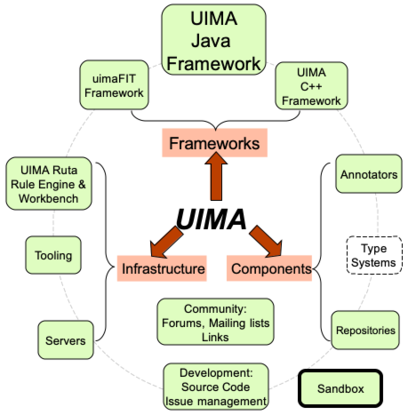

Welcome to the Apache UIMA™ project. Our goal is to support a thriving community of users and
developers of UIMA frameworks, tools, and annotators,
facilitating the analysis of unstructured content such as text, audio and
video.
What is UIMA?
Unstructured Information Management applications are
software systems that analyze large volumes of
unstructured information in order to discover knowledge
that is relevant to an end user. An example UIM
application might ingest plain text and identify
entities, such as persons, places, organizations; or
relations, such as works-for or located-at.

UIMA enables applications to be decomposed into components,
for example "language identification" => "language
specific segmentation" => "sentence boundary
detection" => "entity detection (person/place names
etc.)". Each component implements interfaces defined
by the framework and provides self-describing
metadata via XML descriptor files. The framework manages
these components and the data flow between them.
Components are written in Java or C++; the data that
flows between components is designed for efficient
mapping between these languages.
UIMA additionally
provides capabilities to wrap components as network
services, and can scale to very large volumes by
replicating processing pipelines over a cluster of
networked nodes.
Apache UIMA is an Apache-licensed open source
implementation of the
UIMA specification [pdf]
[doc] (that
specification is, in turn, being developed concurrently
by a technical committee within
OASIS
, a standards organization). We invite and encourage you
to participate in both the implementation and
specification efforts.
Here you can find:
- Frameworks
- Components, and
- Infrastructure,
all licensed under the Apache license. The dashed-line boxes
above are placeholders for possible future additions.
The Frameworks run the components, and are available for both Java and
C++. The
Java Framework supports running both Java and non-Java
components (using the C++ framework). The
C++ framework, besides
supporting annotators written in C/C++, also supports Perl, Python, and
TCL annotators. The UIMA-AS and
UIMA-DUCC are both Scaleout Frameworks and are
addons to the base Java framework. The UIMA-AS supports very flexible scaleout
capability based on JMS (Java Messaging Services) and ActiveMQ. The UIMA-DUCC extends UIMA-AS
by providing cluster management services to automate the scale-out of UIMA pipelines over
computing clusters.
The frameworks support configuring and running pipelines of
Annotator components. These components do the actual work
of analyzing the unstructured information. Users can write
their own annotators, or configure and use pre-existing
annotators. Some annotators are available as part of this project;
others are contained in various repositories on the internet.
Additional infrastructure support components include a simple
server that can receive REST requests and return annotation results,
for use by other web services.
The Addons and Sandbox is for Addons (Annotators and other things) for UIMA, and
a place where new ideas are developed for potential incorporation into the project.


 Welcome to the Apache UIMA project
Welcome to the Apache UIMA project